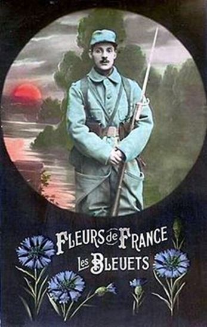

Le « Poppy Day » est l'autre nom du "Remembrance Day" (Jour du Souvenir) dans les pays du Commonwealth. Comme nous, les Anglais commémorent l'Armistice de 1918 mais aussi le souvenir de tous les soldats morts au combat tout en rendant hommage aux anciens combattants qui ont participé aux grands conflits des XXe et XXIe siècle (les deux guerres mondiales, l'Irak, l'Afghanistan…). La « 11e heure du 11e jour du 11e mois » représente à l'évidence beaucoup plus qu'en France où, à mesure que les Poilus s'éteignaient les uns après les autres, cette commémoration devenait peu à peu un jour férié comme un autre, juste synonyme de « grasse mat… », dans le meilleur des cas.
Comment le coquelicot est devenu le symbole de cette journée ?
Au printemps de 1915, peu de temps après avoir perdu un ami à Ypres, un médecin canadien, le lieutenant-colonel John McCrae inspiré par la vue des coquelicots fleurissant sur les champs de bataille labourés par les obus et la mitraille, écrivit un poème, « In Flanders Fields», qui connut un succès certain au Royaume-Uni.
« In Flanders' fields the poppies blow
Between the crosses, row on row,
That mark our place: and in the sky
The larks, still bravely singing, fly
Scarce heard amid the guns below. »
« Dans les champs de Flandres, les coquelicots croissent
Entre les croix rang sur rang,
Qui marquent notre place ; et dans le ciel,
Les alouettes, chantant avec courage, volent
À peine entendues parmi les canons sous elles »
En novembre 1918, Moina Michael, qui travaillait au siège des Secrétaires militaires d’outre-mer du YMCA à New York, inspirée par le poème de McCrae, acheta des coquelicots en soie qui seraient portés à l’Armistice. Elle s’est ensuite mise à promouvoir le port du coquelicot à chaque Armistice... Mais c’est une Française, Anna Guérin, qui introduisit ce colifichet en Angleterre. En 1920, Anna Guérin, membre du YMCA en France, rencontra Moina Michael aux États-Unis. Madame Anna Guérin créa une association « l'American and French Children's League », pour vendre, à l'occasion de l'anniversaire de l'Armistice, des coquelicots en tissus faits à la main, afin de recueillir de l'argent pour aider les enfants des pays qui avaient été ravagés par la guerre en Europe. En 1921, Mme Guérin alla en Grande Bretagne et convainquit la British Legion, nouvellement formée d'adopter le coquelicot comme le symbole du Souvenir. La BL commanda 9 millions de ces coquelicots et les vendit, pour la première fois, le 11 Novembre 1921 au profit des anciens combattants.
L'année suivante, le Commandant George Howson ouvrit une usine à Aylesford, employant des mutilés de guerre, pour produire ces coquelicots.
C’est cette usine qui aujourd’hui encore continue à fabriquer des millions de coquelicots, toujours au profit des anciens combattants.
En Angleterre, la demande de coquelicots était si élevée, que peu atteignaient l'Ecosse ; aussi, l’épouse du Maréchal Haig créa la « Lady Haig Poppy Factory » à Edimbourg en 1926 pour approvisionner l'Ecosse. Plus de 5 millions de coquelicots écossais (qui ont comme caractéristique de n’avoir que quatre pétales et aucune feuille, contrairement aux coquelicots du reste du Royaume - Uni) sont toujours fabriqués à la main par les handicapés et distribués par Poppyscotland.
En France, c’est, également, une fleur qui symbolise la journée du 11 novembre. Beaucoup moins populaire qu’au Royaume-Uni, le Bleuet fait écho à un poème éponyme écrit par Alphonse Bourgoin, rendant hommage aux recrues qui arrivaient pour combler les pertes et qui portaient l’uniforme « Bleu horizon » flambant neuf, tout droit sorti des dépôts :
« Les voici les p’tits « Bleuets »
Les Bleuets couleur des cieux
Ils vont jolis, gais et coquets,
Car ils n’ont pas froid aux yeux.
En avant partez joyeux ;
Partez, amis, au revoir !
Salut à vous, les petits « bleus »,
Petits « bleuets », vous notre espoir ! »
(Les Bleuets de France, 1916)
C'est en 1925 que l'appellation devient un insigne, à l'initiative de deux infirmières des Invalides : Charlotte Malleterre et Suzanne Leenhardt. Elles créent le « Bleuet de France », qui vise à recueillir des fonds pour venir en aide aux mutilés de la Grande Guerre. Les pensionnaires des Invalides confectionnent alors eux-mêmes des bleuets en tissus vendus ensuite à leur profit.
A compter de 1934, ces fleurs sont vendues dans les rues, et l'année suivante, l'Etat officialise la vente du bleuet le jour de l'Armistice. Aujourd’hui, la fabrication des bleuets est confiée exclusivement aux ESAT (établissements réservés aux personnes en situation de handicap)
Depuis la loi n° 2012-273 du 28 février 2012 fixant au 11 novembre la commémoration de tous les morts pour la France, le Bleuet, à l’instar du coquelicot, est devenu leur symbole faisant, de fait, du 11 novembre, un Memorial Day à la française…
Partager cette page